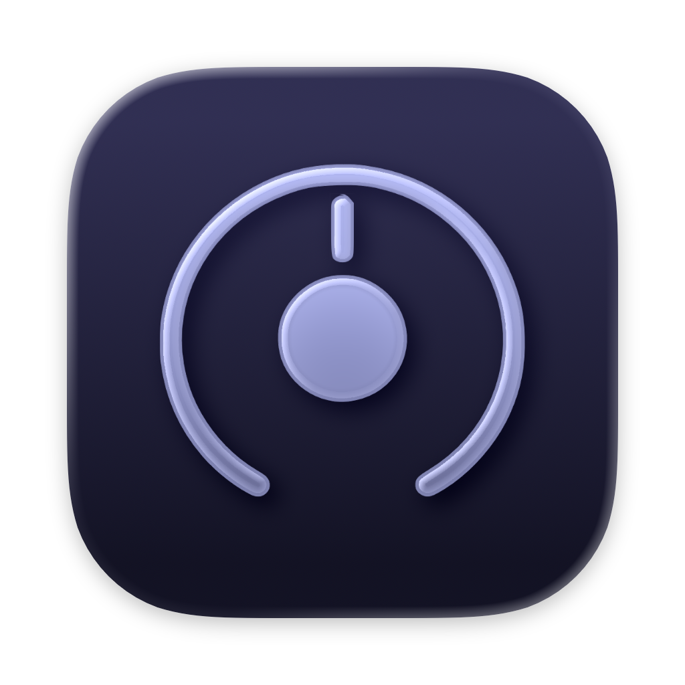
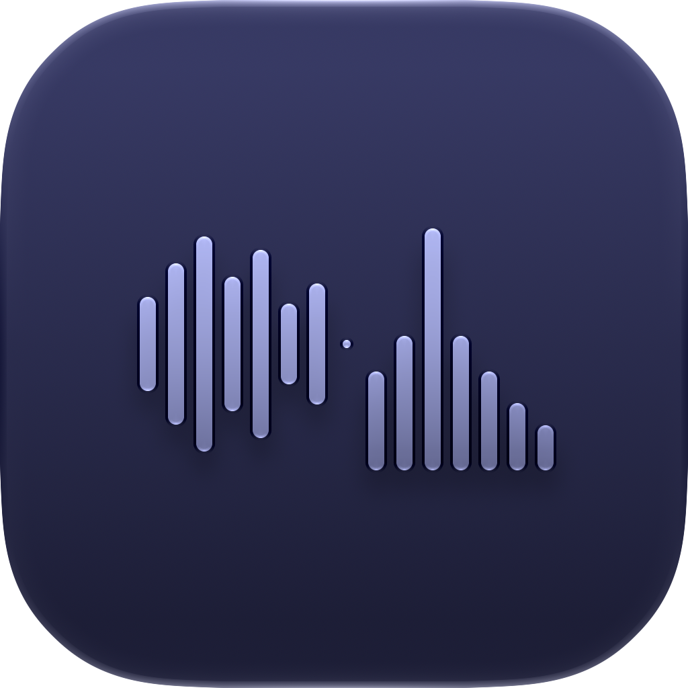

Three apps: Lyra for the monitor level, Audita for target monitoring and hearing dose, Specula for audio inspection, analysis, editing and delivery checks.

Monitor volume for Universal Audio Apollo and Volt Gen 2 interfaces on the F-keys, with Shortcuts, Spotlight, widgets, a Focus Filter and a lyra:// URL scheme behind them.
↓Download free trialDetails$9.99, macOS 12 and later
The volume HUD. Arrow keys, M, D and O work on it.
Target monitoring and hearing health, from the menu bar: the SPL at the listening position held against a calibrated target level, and how much of the day's safe exposure the day has used.
↓Download free trialDetails$19.99, macOS 14 and later
The pinned window, two hours into a session. Every number is computed from the session by the app's rules.

Audio inspection, analysis and editing for macOS: loudness to ITU-R BS.1770-4 and speech-gated LUFS, spectral repair down to a squeak's overtones, compare, audiobook chapters, Audio Unit plugins, and the verdict against the platform the file is going to.
↓Download free trialDetails$99.99, macOS 14 and later
Monitor volume on Universal Audio Apollo and Volt from the F-keys, Reference Levels recalled to a measured dB SPL, and the UA apps started and quit with the interface.
Target monitoring and hearing health: the SPL at the listening position held against a calibrated target level, and the day's hearing dose by the NIOSH method.
Audio inspection, analysis and editing: loudness and true peak against the platform the file is going to, spectral repair, six-version compare, audiobook chapters, speech, Audio Unit plugins and recording.
Headroom is a one-person studio making macOS tools for audio work. I've spent most of my life around audio - live sound first, then recording and production, and eventually into software. These days I work in software quality at a major professional audio company, while my home studio stays busy with personal projects. Guitar has been the constant through all of it, and I've been steadily picking up drums and bass.
I build the apps I was always missing: focused tools that look and behave like they shipped with macOS.
Follow along on Mastodon or X.
Why aren't these apps free? Building and maintaining software properly takes real time and investment. A one-time purchase makes that sustainable without subscriptions, ads, or eventually abandoning the project. You buy it once; I keep it working.
Audita 1.7
Sessions drawn as a dial in History, the session report and the menu bar window, one session at a time in History, and a PDF report for any selection.
Lyra 1.9
Second-generation Universal Audio Volt interfaces, an Interface picker for an Apollo and a Volt together, and ALT speakers with three Reference Levels for each pair.
Audita 1.6.1
Send to Lyra and the self-check's Lyra recall work on second-generation Universal Audio Volt interfaces, with Lyra 1.9.
Audita 1.6
The menu bar window answers two questions: today's dose as a share of the daily budget, then the reference. The pinned panel is one strip that expands in place, History is a log with one line per session, and Settings is a sidebar window with a Calibration page.
Specula 2.0
Specula 2.0 is a free update for every 1.x license. The window is organized around seven tasks: Inspect, Edit, Compare, Chapters, Speech, Spectral and Record. Deliver to judges the file against its delivery category, and Check a Folder, the Apple Music encode check, a mono check and an edit history are new.
Specula 1.4.1
Very long files open on macOS 15 and later: stereo beyond about 3 hours and 5.1 beyond about an hour, up to about 6 hours at 48 kHz, as long as the decoded file fits in half the Mac's memory. Opening a long file also takes less memory. On macOS 27, Undo and Redo keep the whole file, and Edit mode plays on devices with more than two outputs.
Specula 1.4
Music analysis on macOS 27: a song's key and tempo, its sections with their loudness under the ruler, a bars ruler, beat snapping, and the vocal measured against the bed.
Audita 1.5.1
Input devices running at 88.2 kHz or higher measured nothing. Measurement now follows every rate the device offers, 44.1 through 192 kHz.
Specula 1.3
New app icon, Liquid Glass chrome that keeps its dark face on macOS 27, and fixes for Record mode, the edit popovers, and the floating panels on 27.
Audita 1.5
New app icon, Liquid Glass on the Welcome and License windows, and a fix for input devices selected explicitly on macOS 27.
Lyra 1.8
New app icon, a volume HUD that matches the macOS volume control, and a menu toggle that hands the F-keys back to macOS.
Specula 1.2.3
Save keeps the file's container: a WAV called .WAV, .wave, or .bwf used to come back as a CAF under that name. Save As writes the source's bit depth, and the info panel's Format and Encoding rows read the file's header, not its name.
Specula 1.2.2
Save over the original file: an opt-in Save (⌘S) under Settings, Editing rewrites the loaded WAV, AIFF, or CAF in its own format, with a failed save leaving the original untouched.
Specula 1.2.1
Icons only for the mode and view buttons: a toggle under Settings, Layout drops the text labels from the mode bar, the view toggles, and Generate.
Audita 1.4
Calibration-file import with absolute SPL from a UMIK-1's serial, a calibration health card, a one-click rig self-check, and dose that accumulates from true interval energy.
Specula 1.2
Custom loudness targets bring your own delivery spec to every verdict, Match, and report; raw PCM import opens headerless audio under a declared format, in the app and on the CLI.
Lyra 1.7.1
The volume HUD keeps its grey, glassy look on macOS 26 over any wallpaper, with a clear white glyph and level bar.